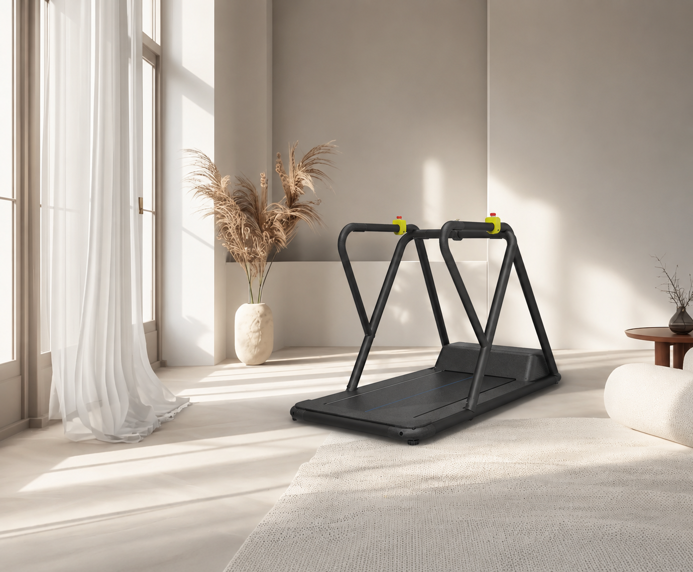
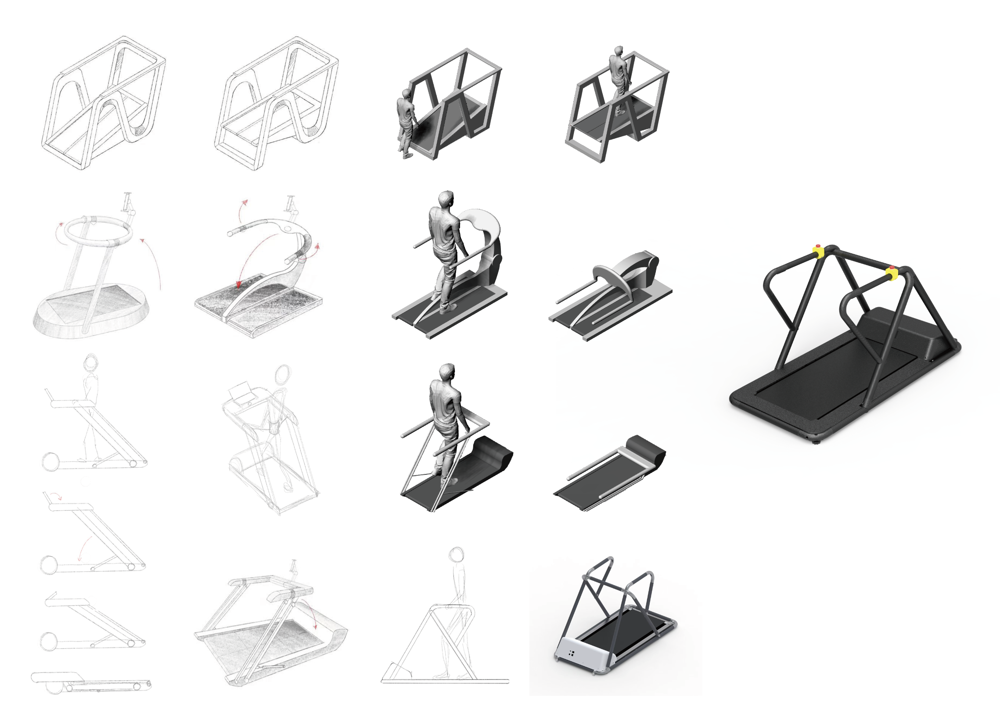
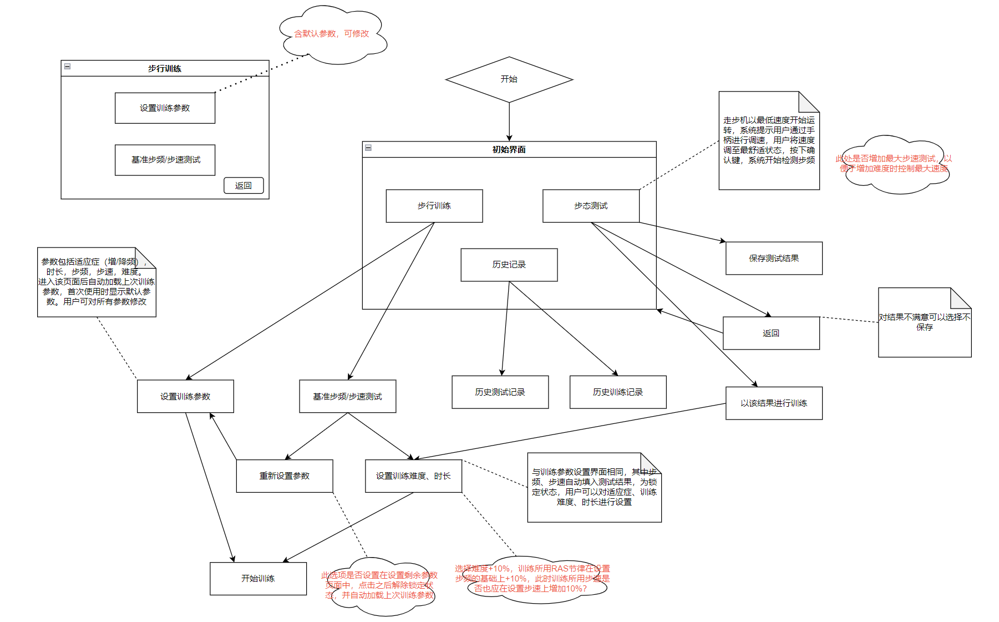
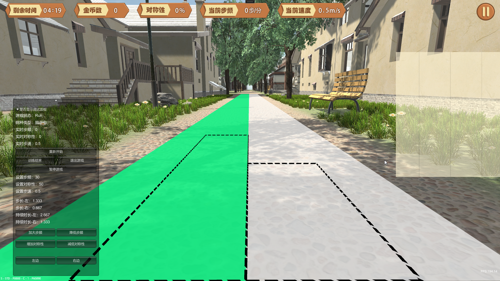
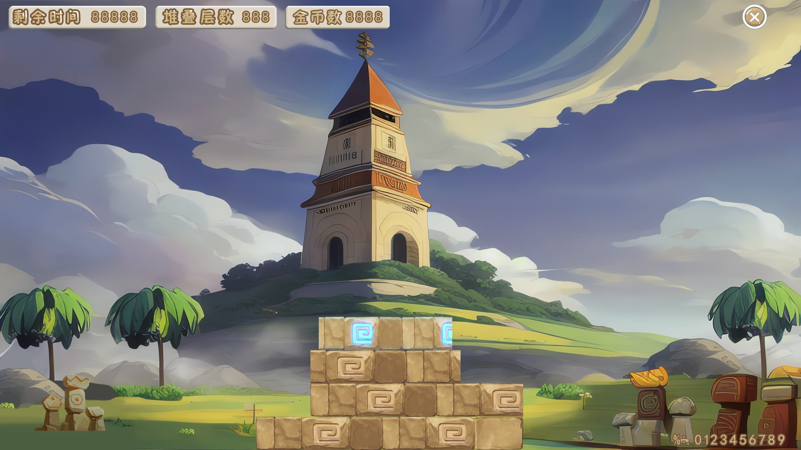
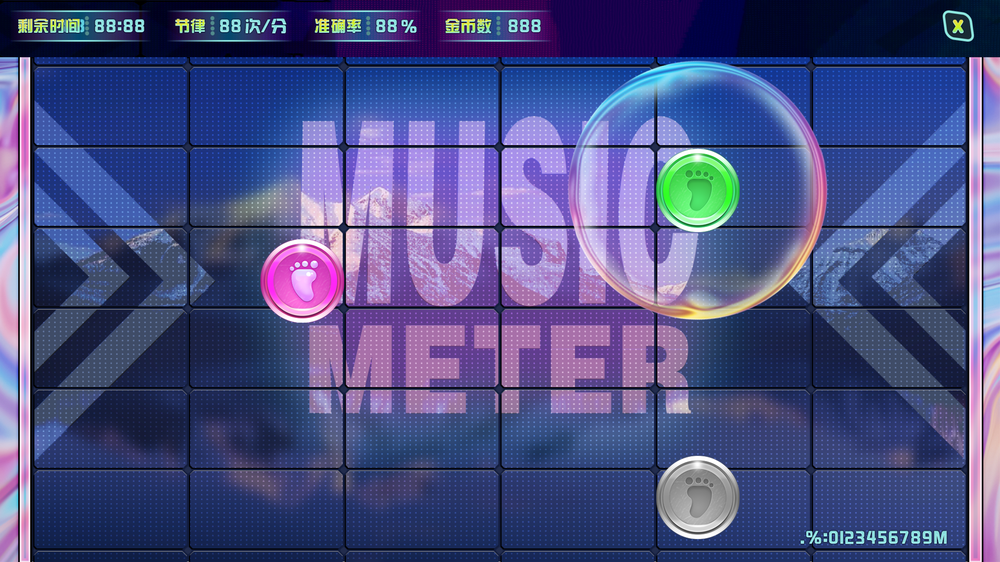

如何让一次枯燥的步态康复训练，变成患者愿意主动完成的事——用游戏化的视听反馈，把居家康复设备的"专业感"和"参与感"做在同一台机器上。
角色与协作本人负责整机外形工业设计与人机工效推进；与项目负责人共同定义软件的功能边界、游戏化交互方案与视听反馈逻辑，并参与了早期 Unity 原型的场景和交互逻辑搭建。软件最终由外部资源团队落地，本人团队负责硬件与交互原型，两侧并轨对接。

↑ VRRAS 设备外观渲染图
步态障碍（帕金森、脑卒中）的康复需要长期、规律的步行训练。但传统步态训练设备是为医院设计的：体积大、操作复杂、缺乏反馈激励，患者独自居家训练时极易因枯燥而放弃。VRRAS 要解决的不是技术问题，而是一个体验问题：如何让一台医疗步行机，变成患者愿意每天主动使用的东西？
整机外观由本人主导设计。核心目标是在保证康复设备必要的稳定性与安全感的前提下，大幅压缩体积与视觉压迫感，让它能真正进入家庭空间。

↑ 从早期方案探索到后期整机形态收敛
方案的核心是两种互补的刺激机制：
在此基础上定义了多种游戏化训练场景，将不同病症的临床特征映射为差异化的游戏机制：
每种场景均设有难度梯度，适配不同恢复阶段。

↑ 交互流程与游戏化训练场景方案（设计定义阶段素材）



↑ 游戏化场景界面图
在康复场景里，安全感和可信感，是比任何游戏功能都更底层的设计要求。
帕金森患者的冻结步态最典型的表现是起步犹豫——脚步无法迈出。VRRAS 在正式训练前设置了启动引导阶段：系统通过语音口号引导患者踏出第一步，并实时检测踏步信号，连续踏步达标后才正式进入训练模式。这一交互流程在方案定义阶段经过反复推敲。
↑ 启动引导协议流程